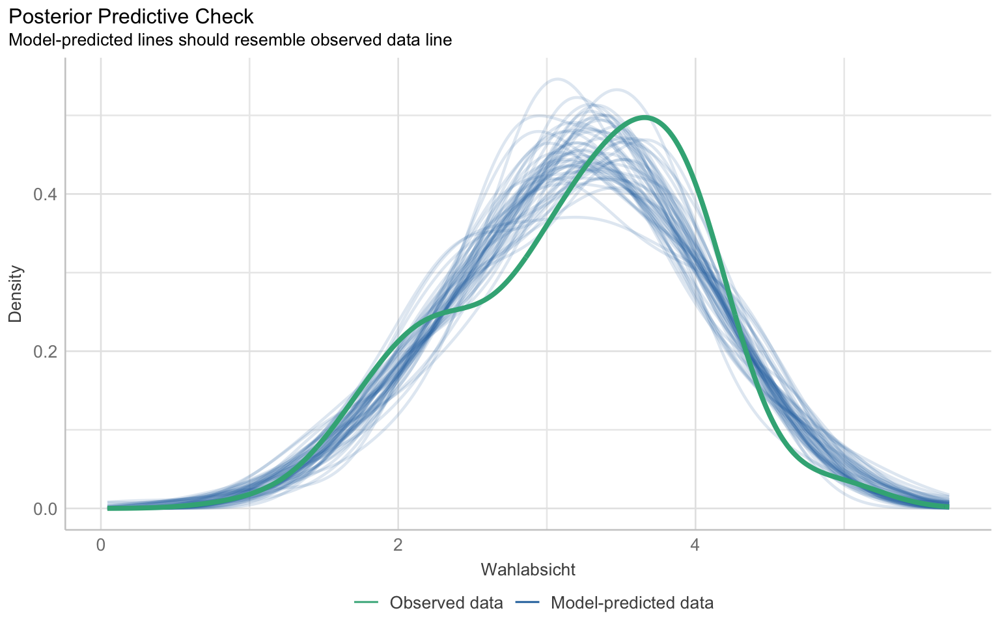
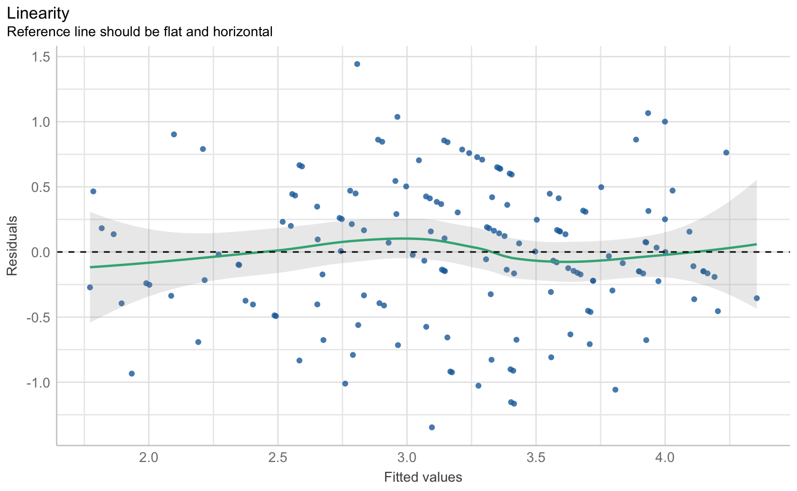
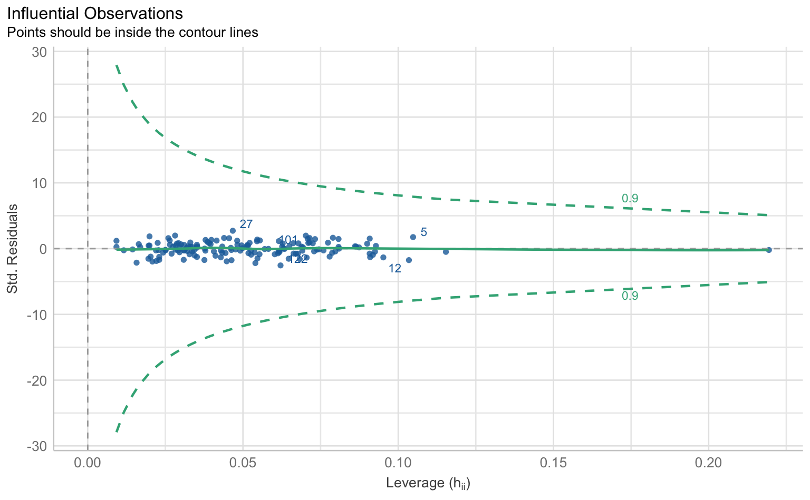
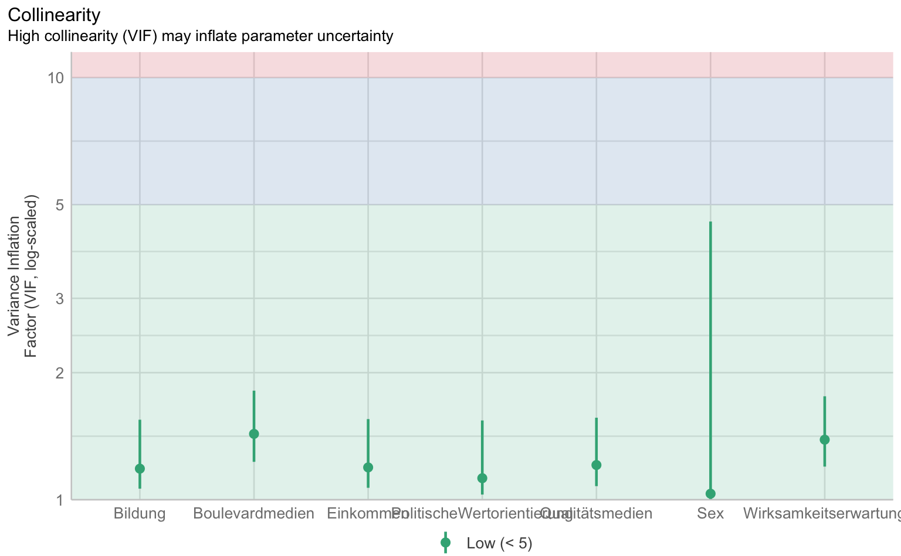
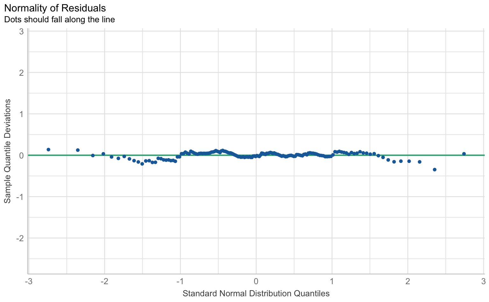

library(marginaleffects)
library(tidyverse)
library(report)
theme_set(theme_minimal())1 ANOVA und Regression
1.1 Pakete und Daten
Wir laden zunächst die notwendigen R-Pakete. Für die ANOVA und Regression brauchen wir das marginaleffects- , sowie das tidyverse- und das report-Paket. Für eine schönere Darstellung der Plots setzen wir außerdem das Theme auf theme_minimal.
Für die ANOVA und die Regression nutzen wir den SPSS-Datensatz productplacement_anova.sav und wir wandeln die Spalte Placementhäufigkeit in einen Faktor um, sodass es als kategoriale Variable behandelt wird. Der Datensatz enthält zwei Spalten: die Placementhäufigkeit und das Persuasionswissen.
d_pp <- haven::read_sav("data/productplacement_anova.sav") |>
mutate(Placementhäufigkeit = as_factor(Placementhäufigkeit))
d_pp# A tibble: 15 × 2
Placementhäufigkeit Persuasionswissen
<fct> <dbl>
1 0 Placements 5
2 0 Placements 7
3 0 Placements 3
4 0 Placements 4
5 0 Placements 6
# ℹ 10 more rowsZudem laden wir dem SPSS-Datensatz wahlabsicht_regression.sav. Auch hier wird eine Spalte, in diesem Fall Sex, in einen Faktor umgewandelt, sodass es als kategoriale Variable behandelt wird. Der Datensatz enthält 8 Spalten: Bildung, Sex, Einkommen, Politische Wertorientierung, Wirksamkeitserwartung, Qualitätsmedien, Wahlabsicht und Boulevardmedien.
d_wahl <- haven::read_sav("data/wahlabsicht_regression.sav") |>
mutate(Sex = as_factor(Sex)) |>
haven::zap_labels()
d_wahl# A tibble: 156 × 8
Bildung Sex Einkommen PolitischeWertorientierung Wirksamkeitserwartung
<dbl> <fct> <dbl> <dbl> <dbl>
1 2 männlich 2 5 1
2 5 männlich 5 5 4
3 4 männlich 3 3 3
4 3 männlich 2 4 2
5 3 männlich 2 1 1
# ℹ 151 more rows
# ℹ 3 more variables: Qualitätsmedien <dbl>, Wahlabsicht <dbl>,
# Boulevardmedien <dbl>
Variablenübersicht für Datensätze
Aus einigen Datenformaten, vor allem SPSS-Dateien, lassen sich automatisch Variablenübersichten mit Variablen- und Wertelabels generieren. Die einfachste Funktion ist dafür view_df() aus dem sjPlot-Paket:
sjPlot::view_df(d_wahl)1.2 ANOVA
1.2.1 Mittelwertvergleiche
Mit der ANOVA überprüfen wir den Einfluss einer Gruppen- bzw. Faktor-Variable (kategorial, also nominal oder ordinal mit wenigen Ausprägungen) auf eine metrische Variable, wobei im Gegensatz zum t-Test mehr als zwei Gruppen verglichen werden können. (Für eine ausführlichere Erklärung siehe die Webseite für die BA-Datenanalyse: https://stats.ifp.uni-mainz.de/ba-datenanalyse/t-test.html).
In unserem Experiment ist eine der zentralen Annahmen, dass sich die Placementhäufigkeit auf das Persuasionswissen auswirkt.
Zunächst nutzen wir die Funktionen group_by() und summarise(), um Mittelwert, Standardabweichung und Fallzahl für die Variable Persuasionswissen basierend auf den Gruppen der Variable Placementhäufigkeit auszugeben.
d_pp |>
group_by(Placementhäufigkeit) |>
summarise(
M = mean(Persuasionswissen, na.rm = TRUE),
SD = sd(Persuasionswissen, na.rm = TRUE),
n = n()
)# A tibble: 3 × 4
Placementhäufigkeit M SD n
<fct> <dbl> <dbl> <int>
1 0 Placements 5 1.58 5
2 7 Placements 10 2.55 5
3 15 Placements 12 0.707 5Das Ergebnis zeigen, dass mit zunehmender Placementhäufigkeit der Mittelwert der Zielvariable steigt: Bei 0 Placements liegt er bei M=5, bei 7 Placements bei M=10 und bei 15 Placements bei M=12. Die Standardabweichungen variieren dabei, wobei die Gruppe mit 15 Placements die geringste Streuung aufweist.
1.2.2 Einfaktorielle Varianzanalyse
Die einfaktorielle Varianzanalyse dient dazu, Unterschiede in den Gruppenmittelwerten der abhängigen Variable Persuasionswissen basierend auf den Kategorien der faktoriellen Variable Placementhäufigkeit zu untersuchen.
Nullhypothese H0: Der Mittelwert des Persuasionswissen ist in allen Experimentalbedingungen gleich.
Wir verwenden die Funktion aov(), um die einfaktorielle Varianzanalyse durchzuführen. Die grundlegende Syntax lautet: aov(metrische_variable ~ gruppen_variable, data = Datenframe). Außerdem benutzen wir die report_table()-Funktion, um die Ergebnisse der Varianzanalyse in einer übersichtlichen Tabelle darzustellen. Diese enthält neben F-Wert, Freiheitsgraden und p-Wert auch das Effektstärkemaß Eta².
results_aov_pp <- aov(Persuasionswissen ~ Placementhäufigkeit, data = d_pp)
results_aov_pp |>
report::report_table()Parameter | Sum_Squares | df | Mean_Square | F | p | Eta2 | Eta2 95% CI
-------------------------------------------------------------------------------------------
Placementhäufigkeit | 130.00 | 2 | 65.00 | 20.53 | < .001 | 0.77 | [0.51, 1.00]
Residuals | 38.00 | 12 | 3.17 | | | | In unserem Fall zeigt sich, dass sich die Experimentalgruppen statistisch signifikant hinsichtlich ihres Persuasionswissens (F(2, 12) = 20.53, p < .001) unterscheiden, wobei das Modell mit 77% Varianzaufklärung (Eta² = 0.77) eine große Vorhersagekraft des Antwortverhaltens hat. Wir wissen aber noch nicht, welche Gruppen sich unterschieden. Die Varianzanalyse gibt nur Aufschluss darüber, ob sich mindestens zwei der Gruppen signifikant voneinander unterscheiden. Vergleichen wir nur zwei Gruppen, reicht uns dieses Ergebnis schon. Vergleichen wir aber mehr als zwei Gruppen, wollen wir auch wissen, welche Gruppen sich signifikant voneinander unterscheiden. Hierfür benötigen wir Post-Hoc-Tests.
1.2.3 Post-Hoc-Tests
Um zu ermitteln, welche Gruppen sich signifikant voneinander unterscheiden, wird mithilfe von paarweisen Vergleichen und einer Alphafehler-Korrektur vorgegangen. In diesem Fall wird der Bonferroni-Korrekturansatz verwendet, der das Risiko von falsch positiven Ergebnissen verringert.
Mit der Funktion marginaleffects::avg_comparisons() werden paarweise Vergleiche zwischen den Gruppen der Variable Placementhäufigkeit durchgeführt. Die Funktion nimmt das zuvor erstellte ANOVA-Modell als Grundlage, und durch die Option p_adjust = "bonferroni" wird sichergestellt, dass die p-Werte entsprechend angepasst werden, um den kumulierten Fehler durch mehrere Tests zu kontrollieren. Die Ergebnisse der paarweisen Vergleiche werden in einem übersichtlichen Format mithilfe von as_tibble() dargestellt.
results_aov_pp |>
marginaleffects::avg_comparisons(
variables = list(Placementhäufigkeit = "pairwise"),
p_adjust = "bonferroni"
) |>
as_tibble()# A tibble: 3 × 10
term contrast estimate std.error statistic p.value s.value predicted_lo
<chr> <chr> <dbl> <dbl> <dbl> <dbl> <dbl> <dbl>
1 Placementh… mean(15… 7 1.13 6.22 1.49e-9 29.3 5
2 Placementh… mean(15… 2.00 1.13 1.78 2.27e-1 2.14 10
3 Placementh… mean(7 … 5 1.13 4.44 2.67e-5 15.2 5
# ℹ 2 more variables: predicted_hi <dbl>, predicted <dbl>Der Post-hoc-Test zeigt, dass zwischen den Gruppen 0 Placements und 7 Placements sowie zwischen 7 Placements und 15 Placements signifikante Unterschiede im Persuasionswissen bestehen.
1.2.4 Modellvorhersagen und -visualisierung
Ähnlich wie bein dem eben verwendeten Post-Hoc-Test nutzen wir die Funktion marginaleffects::avg_predictions(). Der Unterschied liegt darin, dass hier Modellvorhersagen (predictions) anstelle von Vergleichen (comparisons) berechnet werden.
results_aov_pp |>
marginaleffects::avg_predictions(variables = "Placementhäufigkeit") |>
as_tibble()# A tibble: 3 × 8
Placementhäufigkeit estimate std.error statistic p.value s.value conf.low
<fct> <dbl> <dbl> <dbl> <dbl> <dbl> <dbl>
1 0 Placements 5 0.796 6.28 3.33e-10 31.5 3.44
2 7 Placements 10 0.796 12.6 3.26e-36 118. 8.44
3 15 Placements 12 0.796 15.1 2.23e-51 168. 10.4
# ℹ 1 more variable: conf.high <dbl>Wir sehen, dass das Persuasionswissen signifikant ansteigt, wenn die Anzahl der Placements erhöht wird. Dies deutet darauf hin, dass eine größere Anzahl an Placements mit einer höheren Wahrscheinlichkeit verbunden ist, dass die Rezipienten das Persuasionswissen aufnehmen. Die p-Werte sind alle signifikant (p < 0.001).
Für die Visualisierung erstellen wir nun mit ggplot() und geom_pointrange() eine Visualisierung der Mittelwerte und dazugehörigen Konfidenzintervalle von den Modellvorhersage pro Gruppe. Die x-Achse zeigt die Placementhäufigkeit, während die y-Achse die geschätzten Vorhersagen für das Persuasionswissen darstellt. Mit geom_pointrange() werden Punkte für die geschätzten Mittelwerte und vertikale Linien für die Konfidenzintervalle gezeichnet. So können wir erkennen, wie das Persuasionswissen je nach Placementhäufigkeit variiert und wie präzise diese Schätzungen sind.
results_aov_pp |>
marginaleffects::avg_predictions(variables = "Placementhäufigkeit") |>
as_tibble() |>
ggplot(aes(
x = Placementhäufigkeit, y = estimate,
ymin = conf.low, ymax = conf.high
)) +
geom_pointrange() +
labs(x = "Placementhäufigkeit", y = "Vorhergesagtes Persuasionswissen")
1.3 Regression
1.3.1 ANOVA = Regression
Wenn wir den Zusammenhang zwischen zwei metrischen Variablen, wie Placementhäufigkeit und Persuasionswissen, untersuchen wollen, können wir eine lineare Regression durchführen.
Nullhypothese H0: Die Placementhäufigkeit hat keinen Einfluss auf das Persuasionswissen.
Lineare Regression werden mit der Funktion lm() durchgeführt, wobei die Syntax lm(abhängige_variable ~ unabhängige_variable, data = Datenframe) der von aov() für Mittelwertvergleiche entspricht. Wir führen die Regression durch und speichern das Ergebnis im Objekt results_lm_pp.
Mit summary() erhalten wir eine Zusammenfassung des Regressionsmodells, die wichtige Informationen wie die Koeffizienten der unabhängigen Variablen, die Signifikanzniveaus (p-Werte), das Bestimmtheitsmaß (R-Quadrat) und weitere statistische Kennzahlen enthält.
results_lm_pp <- lm(Persuasionswissen ~ Placementhäufigkeit, data = d_pp)
results_lm_pp |>
summary()
Call:
lm(formula = Persuasionswissen ~ Placementhäufigkeit, data = d_pp)
Residuals:
Min 1Q Median 3Q Max
-3 -1 0 1 3
Coefficients:
Estimate Std. Error t value Pr(>|t|)
(Intercept) 5.0000 0.7958 6.283 4.05e-05 ***
Placementhäufigkeit7 Placements 5.0000 1.1255 4.443 0.000803 ***
Placementhäufigkeit15 Placements 7.0000 1.1255 6.220 4.45e-05 ***
---
Signif. codes: 0 '***' 0.001 '**' 0.01 '*' 0.05 '.' 0.1 ' ' 1
Residual standard error: 1.78 on 12 degrees of freedom
Multiple R-squared: 0.7738, Adjusted R-squared: 0.7361
F-statistic: 20.53 on 2 and 12 DF, p-value: 0.0001339Für einen Output in einer übersichtlichen Tabelle nutzen wir wieder report_table().
results_lm_pp |>
report::report_table()Parameter | Coefficient | 95% CI | t(12) | p | Std. Coef. | Std. Coef. 95% CI | Fit
--------------------------------------------------------------------------------------------------------------------------
(Intercept) | 5.00 | [3.27, 6.73] | 6.28 | < .001 | -1.15 | [-1.66, -0.65] |
Placementhäufigkeit [7 Placements] | 5.00 | [2.55, 7.45] | 4.44 | < .001 | 1.44 | [ 0.74, 2.15] |
Placementhäufigkeit [15 Placements] | 7.00 | [4.55, 9.45] | 6.22 | < .001 | 2.02 | [ 1.31, 2.73] |
| | | | | | |
AIC | | | | | | | 64.51
AICc | | | | | | | 68.51
BIC | | | | | | | 67.34
R2 | | | | | | | 0.77
R2 (adj.) | | | | | | | 0.74
Sigma | | | | | | | 1.78Wir erkennen am 95%-CI, das nicht die Null enthält, oder am p-Wert (p < .001), dass die Placementhäufigkeit das Persuasionswissen statistisch signifikant vorhersagt. Der standardisierte Regressionskoeffizient entspricht für 7 Placements r = 1.44 und für 15 Placements r = 2.02. Basierend auf Cohen (1988) kann man also bei beiden von einem starken Effekt sprechen. Das R-Quadrat beträgt einen Wert von R²=.77, d.h. unser Regressionsmodell kann 77% der Varianz in der Variable Persuasionswissen vorhersagen.
Wir verwenden wieder die Funktion marginaleffects::avg_predictions() zur Berechnung der durchschnittlichen Vorhersagen für das Persuasionswissen in Bezug auf die Placementhäufigkeit. Diese mal aber basierend auf dem Regressionsmodell results_lm_pp. Diese Vorhersagen geben Aufschluss darüber, wie sich das Persuasionswissen im Durchschnitt verändert, wenn sich die Placementhäufigkeit ändert, und helfen dabei, die Auswirkungen davon anschaulich zu verstehen.
results_lm_pp |>
marginaleffects::avg_predictions(variables = "Placementhäufigkeit") |>
as_tibble()# A tibble: 3 × 8
Placementhäufigkeit estimate std.error statistic p.value s.value conf.low
<fct> <dbl> <dbl> <dbl> <dbl> <dbl> <dbl>
1 0 Placements 5 0.796 6.28 3.33e-10 31.5 3.44
2 7 Placements 10 0.796 12.6 3.26e-36 118. 8.44
3 15 Placements 12 0.796 15.1 2.23e-51 168. 10.4
# ℹ 1 more variable: conf.high <dbl>Auch hier zeigt der Output, dass das Persuasionswissen im Durchschnitt signifikant ansteigt, wenn die Anzahl der Placements erhöht wird.
1.3.2 Multiple Regression
Mit der lm()-Funktion können wir auch multiple Regressionen berechnen, bei denen es mehr als eine unabhängige Variable gibt. Die Syntax ist identisch, es werden einfach die Variablen mit + verbunden.
Hier benutzen wir den Datensatz der Wahlabsicht und schauen, ob die Wahlabsicht vom Sex, Bildung, Einkommen, Politische Wertorientierung, Wirksamkeitserwartung beeinflusst wird. Wir führen die Multiple Regression durch und speichern das Ergebnis im Objekt results_wahl_1 um anschließend wieder report_table()zu verwenden.
results_wahl_1 <- lm(
Wahlabsicht ~ Sex + Bildung + Einkommen +
PolitischeWertorientierung + Wirksamkeitserwartung,
data = d_wahl
)
results_wahl_1 |>
report::report_table()Parameter | Coefficient | 95% CI | t(150) | p | Std. Coef. | Std. Coef. 95% CI | Fit
--------------------------------------------------------------------------------------------------------------------
(Intercept) | 0.99 | [ 0.40, 1.58] | 3.32 | 0.001 | 6.91e-03 | [-0.13, 0.14] |
Sex [weiblich] | -0.04 | [-0.35, 0.26] | -0.27 | 0.789 | -0.05 | [-0.43, 0.33] |
Bildung | 0.19 | [ 0.09, 0.28] | 3.76 | < .001 | 0.26 | [ 0.12, 0.40] |
Einkommen | 0.09 | [-0.01, 0.18] | 1.80 | 0.074 | 0.12 | [-0.01, 0.26] |
PolitischeWertorientierung | 0.03 | [-0.07, 0.13] | 0.55 | 0.581 | 0.04 | [-0.10, 0.17] |
Wirksamkeitserwartung | 0.40 | [ 0.27, 0.53] | 6.29 | < .001 | 0.44 | [ 0.30, 0.57] |
| | | | | | |
AIC | | | | | | | 316.56
AICc | | | | | | | 317.32
BIC | | | | | | | 337.91
R2 | | | | | | | 0.36
R2 (adj.) | | | | | | | 0.34
Sigma | | | | | | | 0.65Wir erkennen, dass nur die Bildung und die Wirksamkeitserwartung die Wahlabsicht beeinflussen. Bei der Bildung zeigt sich ein positiver Einfluss mit einem Koeffizienten von 0.19, was bedeutet, dass jeder zusätzliche Punkt in der Bildung zu einem Anstieg der Wahlabsicht um 0.19 Skalenpunkte führt. Dieser Effekt ist signifikant (p < 0.001). Die Wirksamkeitserwartung hat einen noch stärkeren Einfluss auf die Wahlabsicht, mit einem Koeffizienten von 0.40. Das bedeutet, dass ein höheres Maß an Wirksamkeitserwartung mit einem Anstieg der Wahlabsicht um 0.40 Skalenpunkte verbunden ist. Auch dieser Effekt ist signifikant (p < 0.001). Im Gegensatz dazu zeigen die Variablen Sex, Einkommen und politische Wertorientierung keinen signifikanten Einfluss auf die Wahlabsicht, da ihre p-Werte über 0.05 liegen. Die Vorhersagequalität unseres Modells liegt bei einem R-Quadrat von R²=.34, was darauf hinweist, dass die Prädiktoren zusammen etwa 34% der Varianz der Wahlabsicht erklären.
Nun führen wir wieder eine multiple Regressionen durch, aber ergänzen noch Qualitätsmedien und Boulevardmedien als Variablen.
results_wahl_2 <- lm(
Wahlabsicht ~ Sex + Bildung + Einkommen +
PolitischeWertorientierung + Wirksamkeitserwartung +
Qualitätsmedien + Boulevardmedien,
data = d_wahl
)
results_wahl_2 |>
report::report_table()Parameter | Coefficient | 95% CI | t(148) | p | Std. Coef. | Std. Coef. 95% CI | Fit
---------------------------------------------------------------------------------------------------------------------
(Intercept) | 1.94 | [ 1.26, 2.62] | 5.62 | < .001 | -0.02 | [-0.13, 0.10] |
Sex [weiblich] | 0.09 | [-0.16, 0.35] | 0.73 | 0.466 | 0.12 | [-0.20, 0.44] |
Bildung | 0.15 | [ 0.06, 0.23] | 3.45 | < .001 | 0.20 | [ 0.09, 0.32] |
Einkommen | 0.02 | [-0.07, 0.10] | 0.42 | 0.674 | 0.03 | [-0.09, 0.14] |
PolitischeWertorientierung | 3.12e-03 | [-0.08, 0.09] | 0.07 | 0.943 | 4.17e-03 | [-0.11, 0.12] |
Wirksamkeitserwartung | 0.21 | [ 0.10, 0.33] | 3.60 | < .001 | 0.23 | [ 0.10, 0.36] |
Qualitätsmedien | 0.19 | [ 0.11, 0.28] | 4.36 | < .001 | 0.26 | [ 0.14, 0.38] |
Boulevardmedien | -0.22 | [-0.29, -0.15] | -6.01 | < .001 | -0.39 | [-0.52, -0.26] |
| | | | | | |
AIC | | | | | | | 262.68
AICc | | | | | | | 263.92
BIC | | | | | | | 290.13
R2 | | | | | | | 0.56
R2 (adj.) | | | | | | | 0.54
Sigma | | | | | | | 0.54Hier sehen wir, dass die Bildung, die Wirksamkeitserwartung, wie auch Qualitätsmedien und Boulevardmedien statistisch signifikant die Wahlabsicht beeinflussen (p < 0.001).
1.3.3 Modellvergleich
Ob Modell 2 signifikant mehr Varianz im politischen Wissen erklären kann als Modell 1, zeigt der partielle F-Test, der mit der anova()-Funktion durchgeführt wird. Funktionsargumente sind die beiden Modelle, die verglichen werden sollen.
anova(results_wahl_1, results_wahl_2)Analysis of Variance Table
Model 1: Wahlabsicht ~ Sex + Bildung + Einkommen + PolitischeWertorientierung +
Wirksamkeitserwartung
Model 2: Wahlabsicht ~ Sex + Bildung + Einkommen + PolitischeWertorientierung +
Wirksamkeitserwartung + Qualitätsmedien + Boulevardmedien
Res.Df RSS Df Sum of Sq F Pr(>F)
1 150 63.528
2 148 43.836 2 19.692 33.242 1.192e-12 ***
---
Signif. codes: 0 '***' 0.001 '**' 0.01 '*' 0.05 '.' 0.1 ' ' 1Die Residualvarianz von Modell 2 ist signifikant kleiner, bzw. die erklärte Varianz signifikant größer als bei Modell 1. Durch das Hinzufügen der Variablen Qualitätsmedien und Boulevardmedien hat sich die Modellgüte deutlich verbessert.
1.3.4 Modellannahmen
Für die Prüfung der klassischen OLS-Annahmen wie Linearität, Normalverteilung der Residuen, Homoskedastizität und Multikollinearität gibt es im performance-Paket eine Sammelfunktion, die schlicht check_model() heißt.
checks <- performance::check_model(results_wahl_2, panel = F)
plot(checks)$PP_CHECK
$NCV
$HOMOGENEITY
$OUTLIERS
$VIF
$QQ
1.3.5 Modellvorhersagen
Um aus Regressionsmodellen in R Vorhersagen zu generieren, benutzen wir die Funktion avg_predictions() aus dem marginaleffects-Paket. Dabei erhalten wir für eine oder mehrere Prädiktorvariablen vorhergesagte Werte des Outcomes. Dabei werden für kategorielle Variablen die Vorhersagen für jede Ausprägung aggregiert, für metrische über (typische) Einzelwerte.
results_wahl_2 |>
marginaleffects::avg_predictions(variables = "Boulevardmedien") |>
as_tibble()# A tibble: 5 × 8
Boulevardmedien estimate std.error statistic p.value s.value conf.low
<dbl> <dbl> <dbl> <dbl> <dbl> <dbl> <dbl>
1 5 2.64 0.104 25.3 1.42e-141 468. 2.43
2 1 3.52 0.0685 51.4 0 Inf 3.39
3 4 2.86 0.0723 39.5 0 Inf 2.72
4 3 3.08 0.0483 63.8 0 Inf 2.98
5 2 3.30 0.0464 71.1 0 Inf 3.21
# ℹ 1 more variable: conf.high <dbl>Die Tabelle zeigt die Vorhersagen für die Wahlabsicht in Abhängigkeit von der Nutzung von Boulevardmedien. Für jede Ausprägung der Boulevardmediennutzung wird ein geschätzter Wert der Wahlabsicht (estimate) angegeben. Diese Schätzungen werden mit dem jeweiligen Standardfehler (std.error), der Teststatistik (statistic) und dem p-Wert (p.value) präsentiert. Die Konfidenzintervalle (conf.low, conf.high) geben an, in welchem Bereich der wahre Wert der Wahlabsicht mit hoher Wahrscheinlichkeit liegt. Höhere Boulevardmediennutzung ist mit einer niedrigeren Wahlabsicht verbunden.
1.3.6 Modellvisualisierung
Die Vorhersagen für metrische Prädiktoren lassen sich am besten als Regressionsgerade samt Konfidenzband visualisieren, d.h. geom_line() und geom_ribbon(). Das Konfidenzband wird fast transparent dargestellt (alpha = .1). Auf der X-Achse ist die Prädiktorvariable, auf der Y-Achse die vorhergesagten Werte.
results_wahl_2 |>
marginaleffects::avg_predictions(variables = "Boulevardmedien") |>
as_tibble() |>
ggplot(aes(
x = Boulevardmedien, y = estimate,
ymin = conf.low, ymax = conf.high
)) +
geom_line() +
geom_ribbon(alpha = .1) +
labs(x = "Nutzungshäufigkeit Boulevardmedien", y = "Vorhergesagte Wahlabsicht")
Weiterführende Materialien
Weitere detaillierte Beispiele mit R-Code und Daten finden sich in den Materialien zur Vorlesung Anwendungsorientierte Analyseverfahren, u.a. zu
- kategoriellen und metrischen Prädiktorvariablen
- multipler Regression und Regressionsannahmen
- Modellvorhersagen und -visualisierungen
1.4 Glossar
| Funktion | Definition |
|---|---|
| anova | Modellvergleich und partieller F-Test |
| lm | Lineares Regressionsmodell schätzen |
| marginaleffects::avg_comparisons | Modellkontraste und Posthoc-Tests berechnen |
| marginaleffects::avg_predictions | Modellvorhersagen berechnen |
| performance::check_performance | Modellannahmen prüfen |
1.5 Hausaufgabe
In einer Studie wurde untersucht, welche Merkmale Vorurteile gegenüber Asylsuchenden bei Befragten beeinflussen (Datensatz asyl.sav).
- Untersuchen sie den Zusammenhang von Demographie (Geschlecht, Alter, Bildung), politischen Überzeugungen (allg. politisches Interesse, Ideologie (links-rechts-Selbsteinschätzung, Autoritarismus, Wahrnehmung negativer Mediendarstellungen) und Vorurteilen gegenüber Asylsuchenden.
- Identifizieren, interpretieren und visualisieren sie den stärksten Effekt aus dem Regressionsmodell.